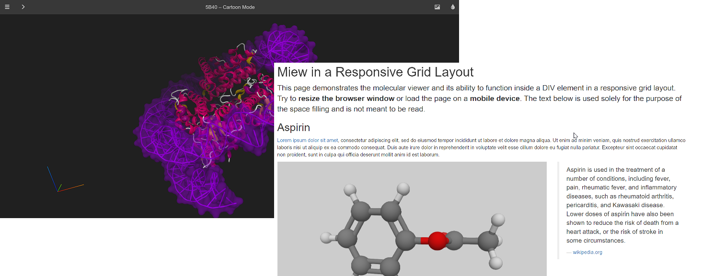

Miew – 3D Molecular Viewer


Copyright (c) 2015–2020 EPAM Systems, Inc.
Miew is a high performance web library for advanced visualization and manipulation of molecular structures.

It provides a full-featured set of tools for 3D visualization and editing of small molecules as well as large molecular complexes, including means to view, analyze, and modify the 3D structure of a molecule. It integrates as a component into your web pages.
Installation and Usage
Miew library is available as an NPM package. Install it either with NPM:
npm install --save miew
or Yarn:
yarn add miew
Then use it in your Webpack / Browserify / Rollup setup, or just test it right in the Node environment.
var Miew = require('miew');
console.log(Miew.VERSION);
You may also download the minified library and access it from the browser's
<SCRIPT> tag, or asynchronously include it via Require.js. Refer to the tutorials,
examples and API docs for more details.
There is also a demo application available in the git repository.
Contributing
Please read CONTRIBUTING.md for details on our code of conduct, and the process for submitting pull requests to us.